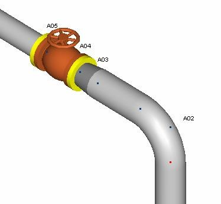
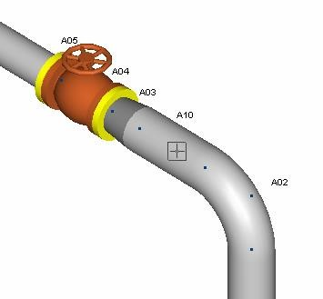
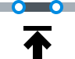
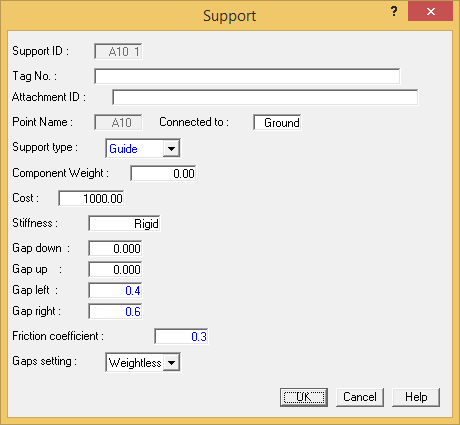
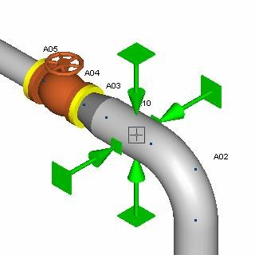
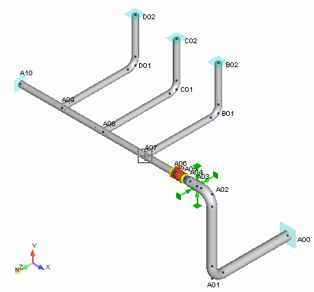

Inserting a Support
In this exercise you will add a run point near the bend at point A02 and insert a support at that location.
- First, zoom into the area around the bend at point A02.

- Before adding a support, you need to add a run point where the support will be placed. Pick point A02 to make it the active point, and then select Insert > Piping Components > Run.
-
.png) The Run Point dialog
is displayed.
The Run Point dialog
is displayed.
Input 2 feet {600} in the Length field, and then press OK to accept the remaining defaults. The new point A10 is inserted in the model as shown in the following figure.

- Select Insert > Supports > Support.
- The Support dialog is displayed. Select Guide from the Support Type field. The dialog is filtered to provide fields related to the definition of a Guide Support.

- Input the following values:
- Gap Left: 0.4 {10}
- Gap Right: 0.6 {15}
- Friction Coefficient: 0.3 (pipe friction on the support)
- Press OK to close the dialog. The support is inserted into the model as shown in the following figure.

- Select Home > Operations > Renumber All Points to renumber the points sequentially.
.png)
-
.jpg) Select View >
Zoom-Pan > Zoom Extents to view the extents of the
model as shown in the following figure.
Select View >
Zoom-Pan > Zoom Extents to view the extents of the
model as shown in the following figure.

- Select File > Save > Save.